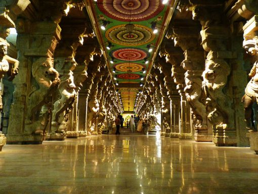

Nestled between the folds of the Trikuta Hills, 56 kms. to the north of Jammu, the Shrine of Vaishno Devi Ji has been an abode of worship for the pilgrims since ages. The holy Shrine of Mata Vaishno Devi Ji is unique as it contains the holiest of holy Pindis manifesting Mata in her three forms i.e. Maha Kali, Maha Lakshmi, Maha Saraswati. Each form represents a particular attribute. To reach this hilly abode of Durga, a devotee has to make his first halt at Katra,a town situated at foothill around 1,700 feet above the sea level. Katra is the winter capital of Jammu and Kashmir and is 50Kms. away from Jammu. From this halt, a devotee has to traverse a distance of 13 Kms. covering a vertical height of 3,500 feet to reach to the Mata Vaishno Devi's cave temple either on foot or on horseback or in palanquines. Devotees can rely on this holy town for accomodation of their choice, as well as the articles of offerings, they wish to offer at the feet of Mata Vaishno Devi.
Shri Maa Vaishno Devi Shrine is one of the oldest shrine of India, located at a height of 5300 feet on the holy Trikuta Hills of the Shivalik Hill Range. The Holy cave is 13 Kms from the Base Camp Katra. The Town Katra is 50 Kms away from Jammu and 35 Kms from District HQ Udhampur and is linked by road. The Mata Vaishno Devi Shrine is one of the most popular Shrines of India.
Recognized as one of the Shakti Peethas, Ma Vaishno Devi Temple is situated in the folds of the Trikuta Hill, in Jammu and Kashmir. This abode of Goddess Durga is supposed to be one of the wish fulfilling places, where lakhs of devotees from India and abroad gather for Ma Vaishno Devi's blessings.
Nestled between the folds of the Trikuta Hills, 56 kms. to the north of Jammu, the Shrine of Vaishno Devi Ji has been an abode of worship for the pilgrims since ages. The holy Shrine of Mata Vaishno Devi Ji is unique as it contains the holiest of holy Pindis manifesting Mata in her three forms i.e. Maha Kali, Maha Lakshmi, Maha Saraswati. Each form represents a particular attribute. MAHA KALI represents Tam Guna, Tam Guna means darkness. In her manifestation of Kali, the goddess inspires her devotees to constantly fight the darkness and never to give up the path of righteousness.
The Total length of the holy cave is about ninety eight feet. The symbols of a large number of Gods and Goddesses of the Hindu Pantheon can be seen in the holy Cave. At the mouth of the original tunnel to the holy cave can be seen the Vakra Tunda Ganesha on the left hand side of the rock face.
Vaishno Devi is one of the most popular pilgrim places in the world. The most prominent tourist and pilgrim attraction is the Shri Mata Vaishno devi shrine, which is considered by many to be the holiest shrine in India. Other attractions are the Deva Mai temple, the Bhairavnath temple and the Dera Baba banda. Archaeology enthusiasts can also check out the Shiv Khori and Ardh Kuwari caves.

The Bahriavnath temple in Vaishno Devi is located just about a few kilometers away from the Maata Vaishno Devi Temple which is located in India’s northernmost state, Jammu and Kashmir. Katra Bhairav is considered to be a tantric according to Hindu mythology. It is believed that Bhairav followed Vaishno Devi and was just about to attack her when she took the form of Kali and beheaded him. When he realized that the goddess was not any ordinary girl, he begged for forgiveness and accepted that he thought of attacking her only in order to attain salvation.

The Ardh Kumari Cave is considered to be one of the few pit stops on your way to pay respects to the Vaishno Devi Shrine in Jammu and Kashmir. The cave is located almost half way on the hike to the Maata Vaishno Devi Temple. The cave is cosidered to be close to 15 gt long and is located close to 4,800 ft above seal level and is located just about 5 km from the Charan Paduka.